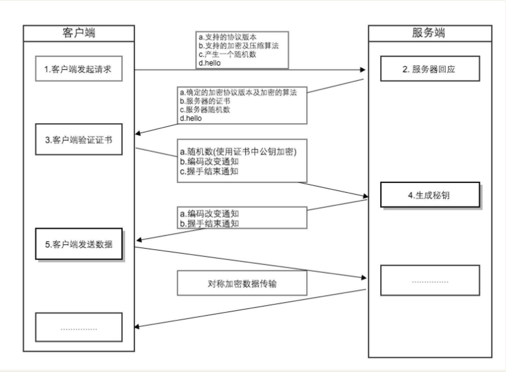

HTTPS 密钥协商过程
客户端发出握手请求(Client Hello)，包含以下信息：
支持的协议版本，比如TLS 1.0版。
一个客户端生成的随机数(random_1)，这个随机数既需要客户端保存又需要发送给服务器。
支持的加密方法，比如RSA公钥加密。
支持的压缩方法。
服务器回复(Server Hello)，包含以下信息：
确认使用的加密通信协议版本，比如TLS 1.0版本。如果浏览器与服务器支持的版本不一致，服务器关闭加密通信。
一个服务器生成的随机数(random_2)。
确认使用的加密方法，比如RSA公钥加密。
服务器证书。
如果服务器需要确认客户端的身份，就会再包含一项请求，要求客户端提供”客户端证书”。比如，金融机构往往只允许认证客户连入自己的网络，就会向正式客户提供USB密钥，里面就包含了一张客户端证书。
客户端回应，包含以下步骤：
验证服务器证书的合法性，证书合法性包括：证书是否过期，发行服务器证书的 CA 是否可靠，发行者证书的公钥能否正确解开服务器证书的“发行者的数字签名”，服务器证书上的域名是否和服务器的实际域名相匹配。如果合法性验证没有通过，通讯将断开；
客户端使用一些加密算法(例如：RSA,Diffie-Hellman)产生一个48个字节的Key，这个Key叫PreMaster Secret。该PreMaster Secret用服务器公钥加密传送，防止被窃听。
编码改变通知，表示随后的信息都将用双方商定的加密方法和密钥发送。
客户端握手结束通知，表示客户端的握手阶段已经结束。这一项同时也是前面发送的所有内容的hash值，用来供服务器校验。
如果前一步，服务器要求客户端证书，客户端会在这一步发送证书及相关信息。
服务器回应，服务器通过上面的三个随机数(random_1,random_2,PreMaster Secret)，计算出本次会话的『会话密钥(session secret)』，然后向客户端发送下面信息
编码改变通知，表示随后的信息都将用双方商定的加密方法和密钥发送。
服务器握手结束通知，表示服务器的握手阶段已经结束。这一项同时也是前面发送的所有内容的hash值，用来供客户端校验。
至此，服务器和客户端的握手阶段全部结束，接下来，客户端与服务器进入加密通信，就完全是使用普通的HTTP协议，只不过用『会话密钥(session secret)』对内容做对称加密。

QA
1. 为何需要三个参数生成 Master Secret ？
由于SSL协议中证书是静态的，因此需要引入一种随机因素来保证协商出来的密钥的随机性。SSL协议不信任每个主机都能生成完全随机的随机数，所以这里需要服务器和客户端共生成3个随机数，每增加一个自由度，随机性就会相应增加。
同时需要注意前两个随机数都是明文传输的，窃听者是可以轻易获取到的，只有最后一个 PreMaster Secret 是加密传输的，只有拥有服务器私钥才能解密，一旦 PreMaster Secret 泄露，那么本次通信就就完全可被破解了。
2. 为何使用 RSA 协商密钥不直接使用证书公钥，而是通过server key exchange传输服务器密钥？
可能有几个原因
- 曾经美帝有出口限制，限制 RSA 在512比特以下，对称加密密钥限制40比特以下，如果超过512只能拿来签名，不能拿来加密。因此证书里头的RSA公钥长度超过512的不得不重新生成一对512长度的临时加密用的密钥，并将RSA公钥塞进消息体发出去。
- 服务器的证书只用做签名，不用做密钥交换，或者服务器没有证书。